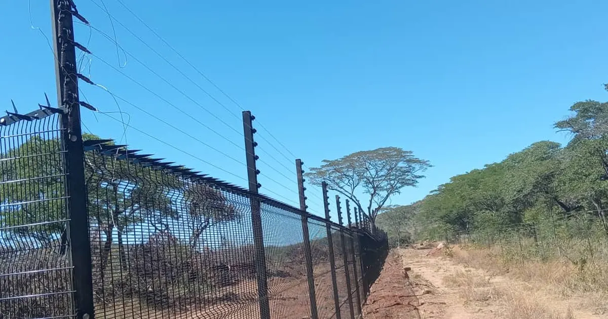
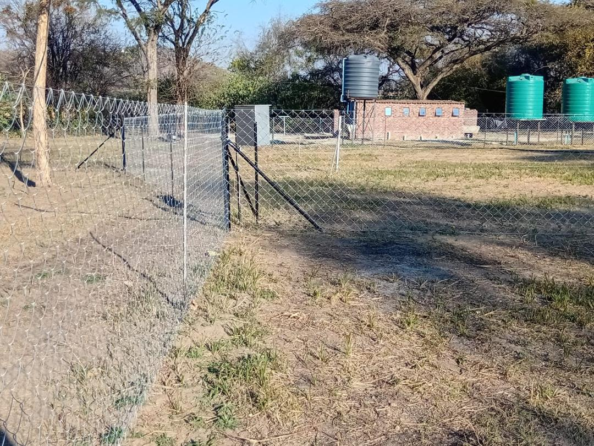

Quick answer
Plan mining and site security fencing by zone. Use clearview fencing with razor wire for high-security areas such as stores, plant and fuel; diamond mesh with barbed or razor wire for compounds and general boundaries; and controlled vehicle and pedestrian gates at every access point. Allow for remote delivery, rocky ground, heavy vehicles and work around production and safety rules.

Why sites need more than one type of fence
A mine or industrial site is not one boundary. It is several areas with different risks: the outer perimeter, the plant, stores and fuel, pits and dams, offices and the compound. Fencing every area to the highest standard is expensive. Fencing every area to the lowest standard leaves your most valuable areas exposed. The answer is to fence by zone.
Fence by zone
| Zone | Risk | Common fence |
|---|---|---|
| Stores, plant, fuel and high-value areas | Theft and sabotage | Clearview with razor wire topping |
| Outer perimeter | Trespass, livestock, illegal mining | Diamond mesh or clearview, with barbed or razor wire |
| Pits, dams and hazards | People and animals falling or drowning | Diamond mesh or field fence with clear signage |
| Compounds and offices | General security and access control | Diamond mesh or clearview with gates |

The products that do the work
- Clearview fencing: rigid anti-climb panels that are hard to climb and easy for guards and cameras to see through.
- Razor wire: fence-top, wall-top or standalone coils for the highest-risk areas.
- Diamond mesh: an economical fence for long perimeters, compounds and hazard areas.
- Gates: vehicle and pedestrian gates fabricated to match the fence, with space for a guard point.
Gates and access control
Most security problems happen at gates, not along the fence. Plan:
- As few access points as the operation allows.
- Separate vehicle and pedestrian gates, with room for a guard house and inspection.
- Gates strong enough for daily use by heavy vehicles.
- Lighting and CCTV coverage at every gate.
Planning for tough conditions
- Remote locations: material delivery and the installation crew's logistics need to be planned around road access and distance.
- Rocky ground: posts may need drilling or larger footings, which affects time and cost.
- Dust, heavy vehicles and weather: galvanised materials and strong posts last longer.
- Safety rules: installation has to fit around blasting, production schedules and site inductions.
Keep the fence working
- Patrol the perimeter regularly and log damage.
- Clear vegetation from the fence line so guards and cameras can see it.
- Repair cuts and gaps immediately: a known gap invites repeat intrusions.
- Review the fence when the site expands or a new area becomes high value.
What to send for a quote
Send Azzar the site location and access route, the approximate length of each zone, what you want to protect, any existing walls or fences, the number and type of gates, your timeframe and a few clear photos or a site plan. We will tell you whether an on-site assessment is needed. See mining fencing and commercial and industrial fencing.
Get a quote from Azzar
Send us your location, the approximate length, what you want to protect and a few photos. We reply with a recommendation and a no-obligation quote, and arrange a free site assessment if one is needed.